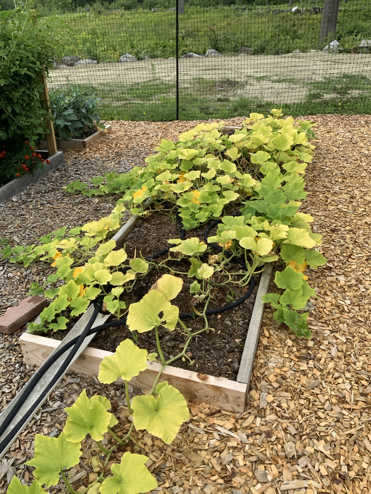
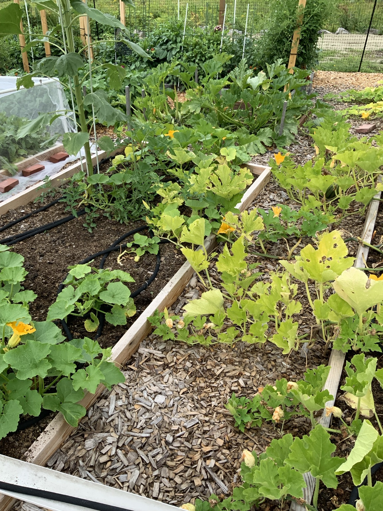
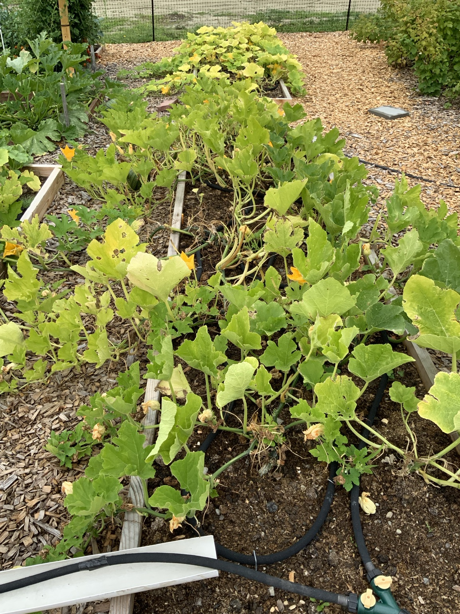

What was observed
- Yellow-green foliage is widespread, especially on older leaves.
- Vines remain active and are still producing blossoms and developing fruit.
- Some leaves have minor holes and spotting from insect feeding or weather injury.
- No obvious white, powdery coating was visible.
- The beds were last fertilized about three weeks earlier with Flower-tone.
Assessment
The recent Flower-tone application is slow-release, but squash and pumpkins are heavy feeders and nutrient demand rises sharply during flowering and fruit set. The overall yellowing may reflect heavy nutrient demand, limited nutrient uptake from consistently wet soil, or a magnesium shortage. The plants are stressed, but they are not beyond recovery.
Important: Check soil moisture 3–4 inches deep before adding more water. Moist is good; saturated soil can limit root function and nutrient uptake.
Next care steps
- Water only when the soil several inches down is beginning to dry.
- Apply one root-zone treatment of Epsom salt at 1 tablespoon per gallon of water. Do not make this a weekly treatment.
- Remove only the oldest yellow leaves that lie on the soil; keep functioning foliage.
- Recheck leaf color and new growth in 7–10 days.
- If new growth remains pale, give a light feeding of Neptune’s Harvest Fish & Seaweed or another gentle, quick-acting vegetable fertilizer.
- Continue checking for striped cucumber beetles, squash bugs, vine borers, and sudden wilting.